Cirql.
Everything you always wanted in an interval timer. No more, no less.Alles, was du dir von einem Intervall-Timer wünschst. Nicht mehr, nicht weniger.


Super simple, no clutter
Set work time, rest time and rounds. Tap start. Huge numbers, big buttons, high contrast.
Full Apple Watch integration
Set up, start and control your workout from iPhone or Watch – always in sync, with haptics at every change.
Now on Garmin watches
A free Cirql app for your Garmin, with the same big, bold look: full-color phases, huge numbers, vibration at every change. It works on its own and syncs with the iPhone app. Your workout is saved to Garmin Connect only if you confirm on the watch.
Fair, simple pricing
Try it free for 30 days, then unlock it once for €1.49. No subscription, no ads. Family Sharing is supported: one purchase covers your whole family. Installed in November 2026 or earlier? Cirql stays free for you forever.
Private by design
No ads, no tracking, no accounts. Nothing leaves your iPhone.
Super einfach, ohne Ballast
Trainingszeit, Pause und Runden einstellen. Start tippen. Riesige Zahlen, große Knöpfe, hoher Kontrast.
Volle Apple-Watch-Integration
Training an iPhone oder Watch einstellen, starten und steuern – immer synchron, mit Haptik bei jedem Wechsel.
Jetzt auch für Garmin-Uhren
Eine kostenlose Cirql-App für deine Garmin, im selben großen, kräftigen Look: Farbflächen je Phase, riesige Zahlen, Vibration bei jedem Wechsel. Sie läuft allein und synchronisiert sich mit der iPhone-App. Dein Training wird nur in Garmin Connect gespeichert, wenn du es auf der Uhr bestätigst.
Fairer, einfacher Preis
30 Tage kostenlos testen, danach einmalig für 1,49 € freischalten. Kein Abo, keine Werbung. Mit Familienfreigabe: ein Kauf gilt für die ganze Familie. Im November 2026 oder früher installiert? Dann bleibt Cirql für dich für immer kostenlos.
Privat, von Grund auf
Keine Werbung, kein Tracking, kein Konto. Nichts verlässt dein iPhone.
Screenshots
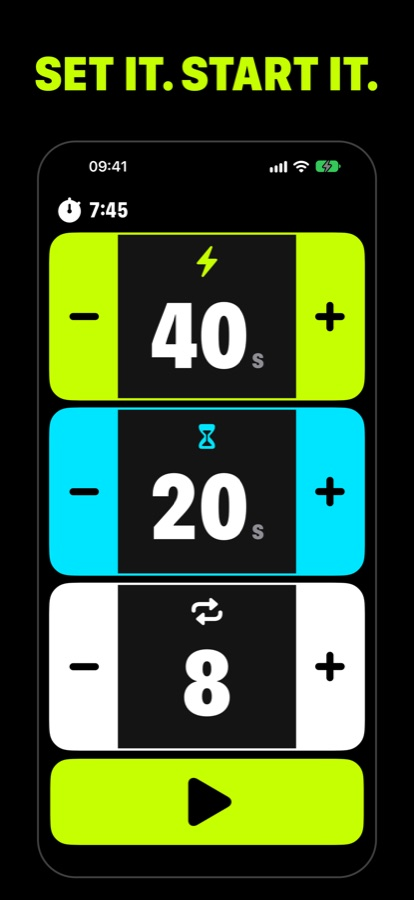
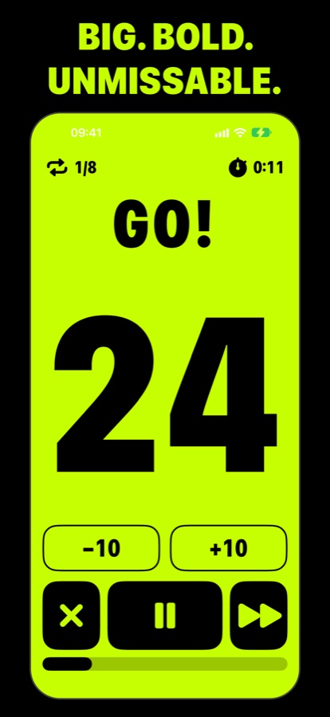
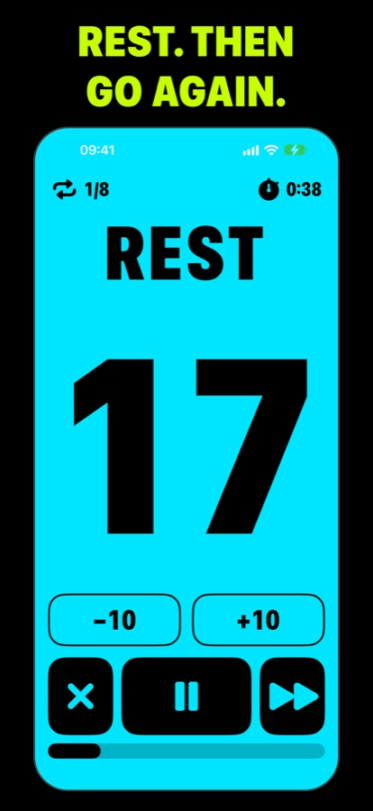
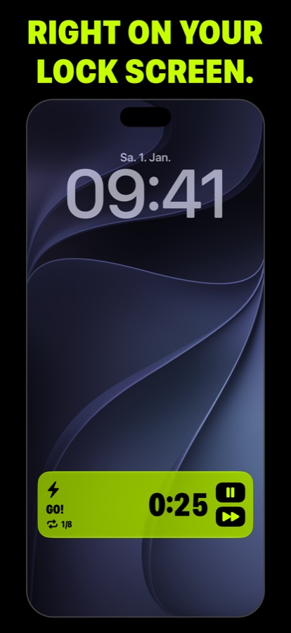
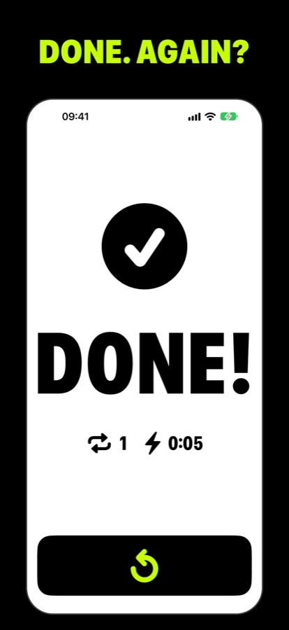
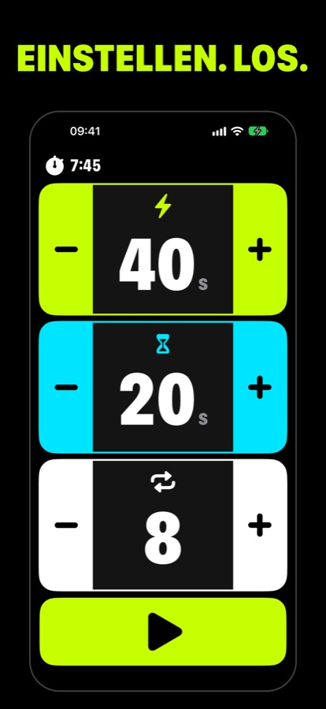
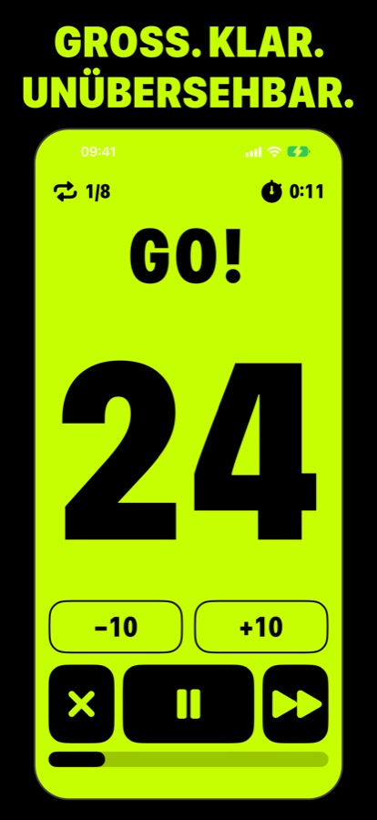
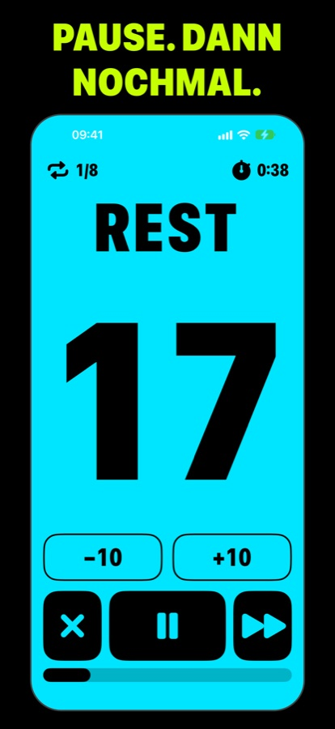
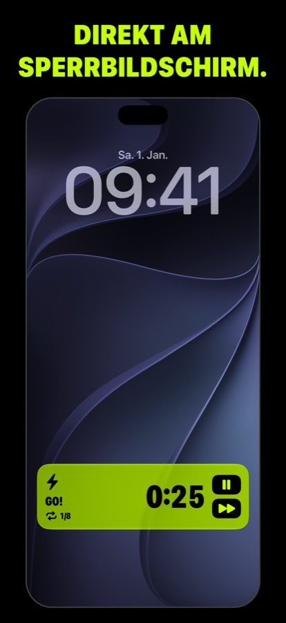
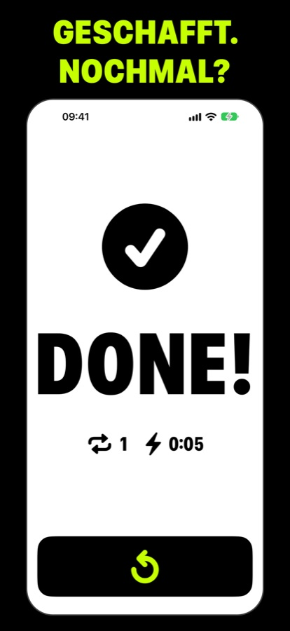
On your Apple WatchAuf deiner Apple Watch
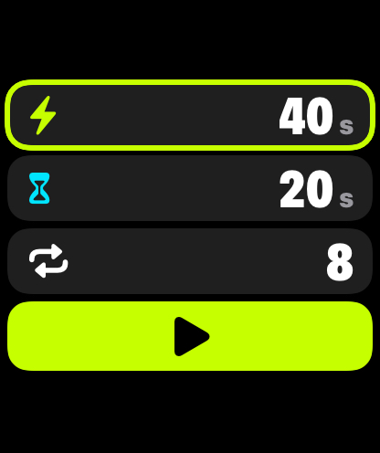
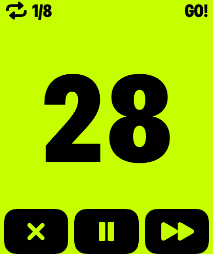
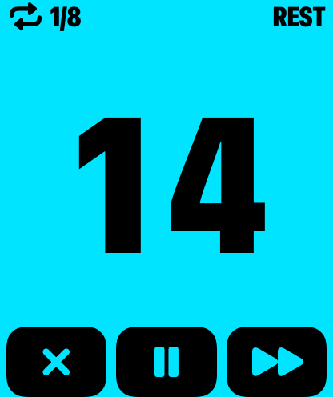
On your GarminAuf deiner Garmin
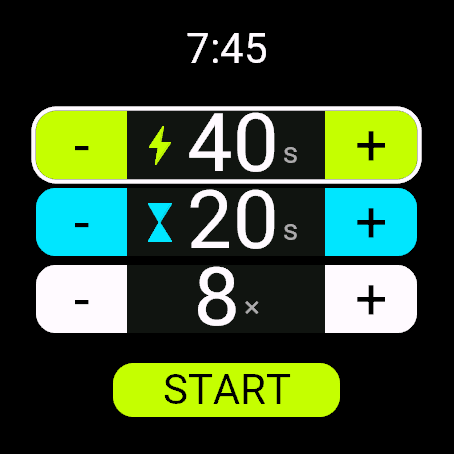
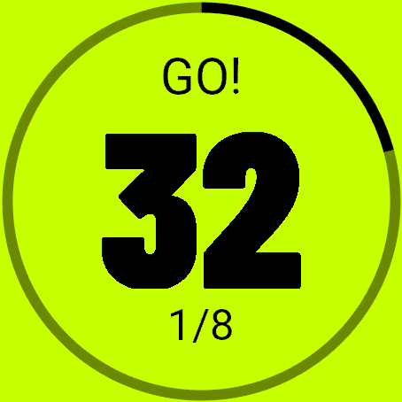
Cirql is a super simple interval timer for iPhone, Apple Watch and Garmin. No ads, no tracking, no accounts.
Cirql ist ein super einfacher Intervall-Timer für iPhone, Apple Watch und Garmin. Keine Werbung, kein Tracking, kein Konto.